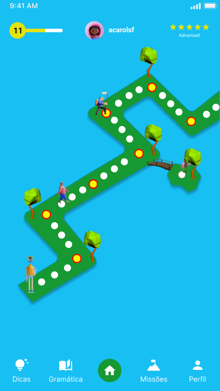
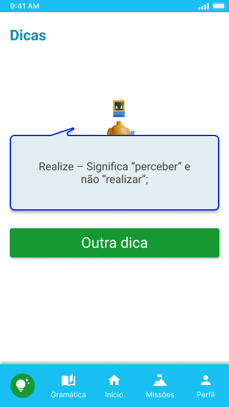
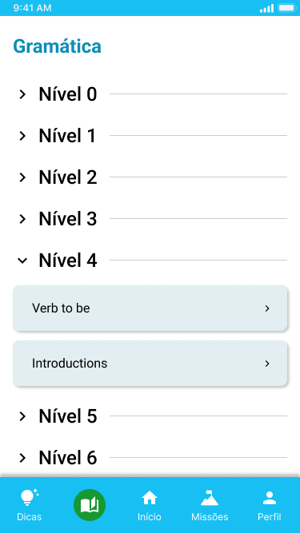
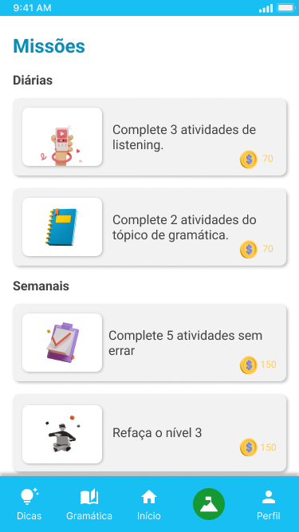
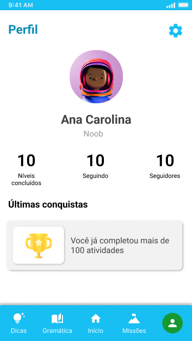

Diante da globalização, o mundo está cada vez mais conectado, deixando muitas pessoas curiosas acerca de línguas faladas em outros países, seja para viajar algum dia ou se comunicar com um nativo pela Internet. Além disso, o avanço tecnológico está gerando muitas fontes de busca para crescimento profissional, onde é muito importante o conhecimento de termos técnicos nas mais diferentes línguas. Para isso, há alguns aplicativos no mercado que ajudam no aprendizado da língua utilizada diariamente, mas não há um foco no vocabulário técnico. Portanto, esse trabalho possui como objetivo modelar e desenvolver uma aplicação que auxilia no aprendizado de uma língua estrangeira cujo foco não é só o vocabulário e expressões do dia-a-dia, mas também termos técnicos de áreas profissionais. Como base para a ideação das principais funcionalidades, o projeto deve adotar métodos de gamificação e conceitos de teorias da aprendizagem. Durante o desenvolvimento, o projeto será realizado em fases, que seria a ideação, desenvolvimento e implantação. O projeto fará o uso da metodologia ágil Scrum. E, ao final do projeto, haverá um produto documentado e testado.
Com a globalização, a sociedade está sempre em busca de manter a comunicação entre si. Hoje em dia, a maioria das pessoas possuem o seu próprio smartphone e, nele, há diversas aplicações, cada uma com funcionalidades distintas que auxiliam nas tarefas do dia-a-dia. Devido a facilidade de comunicação entre pessoas de diferentes partes do mundo, houve um aumento no número de aplicações criadas para ajudar as pessoas a aprender outras línguas (MUNDAY, 2016). E, com a pandemia do COVID-19 isso se intensificou.
Aprender uma língua estrangeira demanda disciplina e foco, ainda mais quando se trata da aprendizagem autônoma (DA GUIA, 2016). Para isso, há alguns aplicativos disponíveis que podem auxiliar nesse processo, como é o caso do Duolingo, Cambly, Lingua.Ly, Hello Talk, entre outros. Embora todos eles sejam ferramentas eficazes para o aprendizado de uma nova língua (MUNDAY, 2015; VESSELINOV; GREGO, 2018; LOEWEN; ISBELL; SPORN, 2020), cada um possui métodos de aprendizagem diferentes. A maioria dos aplicativos citados são muito bons para aprender vocabulário e expressões do dia-a-dia, mas existe uma dificuldade quando se trata do aprendizado de termos técnicos. Contudo, diante do contínuo avanço tecnológico, trabalhos de diversas áreas são publicados nas mais diferentes línguas. E, para que o profissional consiga se atualizar, sem precisar esperar sair a tradução, podendo demorar bastante e já ter saído uma nova tecnologia inovadora, é necessário entender pelo menos os termos técnicos. Fazendo dessa funcionalidade um diferencial dos outros aplicativos. Ou seja, o usuário poderá aprender não só a língua do dia-a-dia, mas como ele poderá escolher focar somente em aprender vocabulário técnico de qualquer área.
Diante disso, tomando como foco o aprendizado do usuário, é importante também analisar as teorias da aprendizagem. Essas teorias auxiliarão no desenvolvimento e validação das funcionalidades. Além disso, para ajudar na parte de gamificação do aplicativo, os conceitos de Edward Thorndike e Edward Tolman se tornam interessantes. Eles afirmam que ao reagir da forma esperada ou acertar uma questão, por exemplo, deverá haver um elogio e uma recompensa, porém, ao errar, deverá haver uma punição e/ou perda da recompensa (OSTERMANN, et al., 2011).
Contudo, apesar de esses conceitos serem voltados muito para a parte da educação em si, faz-se importante pois ajuda na hora da definição de requisitos que deve ser uma alta prioridade durante o projeto. Portanto, para que esse projeto seja pensado, modelado e desenvolvido, faz-se necessário o uso da Engenharia de Software. Além disso, além da aplicação de conhecimentos envolvendo ensino e aprendizagem, será importante focar na interação humano-computador, visto que se trata de um jogo, cujo foco seriam usuários de qualquer idade que queiram aprender jogando.
A principal motivação, que gerou a ideia do Lingame, se deu durante estudos acerca das teorias da aprendizagem, onde é possível analisar o que intelectuais da educação, como Ivan Pavlov, Paulo Freire, Edward Thorndike, Edward Tolman, Jerome Bruner e Robert Gagné, dizem sobre os métodos de aprendizagem. A partir daí, foi possível perceber que algumas aplicações que sugerem o ensino de línguas não conseguem explorar bem esses métodos. Outra motivação se deu durante os anos na graduação de tecnologia, pois é importante notar a falta de aplicativos que focam em vocabulários técnicos das áreas profissionais, deixando esses usuários de fora.
Ao observar aplicativos cuja finalidade é auxiliar na aprendizagem de línguas, é possível notar que o método mais utilizado é o da gamificação. E, segundo Costa et al. (2018), a gamificação possibilita um suporte para os métodos de ensino, pois ele motiva o jogador a completar seus objetivos, mantendo ele na plataforma. E, como o mundo atual está mais ligado à tecnologia, faz da gamificação um ótimo mecanismo.
Portanto, a ideia de juntar um aplicativo, onde o usuário pode aprender e jogar faz sentido, fazendo com que seja possível desenvolver uma aplicação onde o usuário possa completar missões diárias e competir com os amigos ao mesmo tempo, enquanto aprende uma nova língua. É importante ressaltar também que, assim como as aplicações que auxiliam o aprendizado de línguas, aqueles jogos que é preciso pagar para continuar jogando, não motivam tanto o usuário a continuar utilizando.
Como objetivo geral, este projeto visa modelar e desenvolver uma aplicação de ensino de língua estrangeira, inicialmente o inglês com foco na linguagem técnica, baseada no sistema de recompensa utilizando o método de gamificação.
Já os objetivos específicos deste projeto são:
O projeto consistirá em fases, onde será necessário planejar antecipadamente cada passo para que seja possível realizar com sucesso. A primeira fase consistirá na ideação do projeto, onde serão analisados todos os requisitos funcionais e não funcionais da aplicação. Após a ideação da primeira versão dos requisitos, será montado o que se chama de Mínimo Produto Viável (MVP), onde será possível validar quais são as primeiras funcionalidades que serão estudadas pelas pessoas envolvidas.
Com as principais funcionalidades já definidas, será realizada uma documentação inicial contendo todos os requisitos e o que será definido na primeira versão, esses documentos deverão ser atualizados com frequência. Em paralelo, já será possível desenvolver os primeiros diagramas que serão utilizados durante o desenvolvimento. E com isso, já será possível analisar quais tecnologias serão utilizadas para desenvolver a aplicação.
A arquitetura da aplicação deverá ser cross-platform, ou seja, desenvolvê-la para ser utilizada em múltiplas plataformas, como mobile e web. Embora o projeto deva considerar a modelagem para ambos os ambientes, baseado em pesquisas realizadas pelo IBGE (2019), onde 98% dos brasileiros utilizam a internet pelo celular, o desenvolvimento do projeto deverá ser focado primeiramente para mobile.
Durante o desenvolvimento, será utilizado a metodologia ágil SCRUM, que ajudará na gestão e planejamento do projeto, dividindo-o em pequenas partes entregáveis, auxiliando na melhora da qualidade (CRUZ, 2013). Além disso, será necessário um time de produtos e um time de desenvolvimento. O time de produtos ficará com a parte de analisar o produto, pesquisar, prototipar e auxiliar o time de desenvolvimento a entender o que, como e quais são os critérios de aceite para que tal funcionalidade seja implementada. E o time de desenvolvimento ficará responsável por desenvolver o produto.
A aplicação será desenvolvida em versões que serão disponibilizadas, primeiramente para o Android, pois, de acordo com a Statcounter (2022), em abril de 2022, cerca de 86% dos brasileiros utilizam o sistema operacional Android.
Ao final de todo o projeto, será gerado um aplicativo todo documentado que poderá ser adaptado para aprender qualquer linguagem. Para finalizar todo o projeto, será mostrado no aplicativo uma pesquisa de satisfação para que os usuários possam dar a sua opinião acerca do produto final, essas respostas poderão ser apresentadas como resultados.
Página Inicial
Dicas
Gramática
Missões
Perfil
COSTA, Daniel Leite. et al. Revisão Bibliográfica dos Aspectos e Métodos Componentes da Gamificação na Educação. SBC - Proceedings of SBCGames. Paraná. 2018.
VESSELINOV, Roumen; GREGO, John. Duolingo effectiveness study. City University of New York, USA. 2012.
CRUZ, Fábio. Scrum e PMBOK unidos no Gerenciamento de Projetos. Brasport, 2013.
DA GUIA, Lucy Lanna Freitas. Autonomia no Processo de Ensino-Aprendizagem de Língua Inglesa. Ceará. 2016.
IBGE – INSTITUTO BRASILEIRO DE GEOGRAFIA E ESTATÍSTICA. Diretoria de Pesquisas, Coordenação de Trabalho e Rendimento. Pesquisa Nacional por Amostra de Domicílios Contínua. Brasil. 2019.
MUNDAY, Pilar. The case for using DUOLINGO as part of the language classroom experience. RIED: Revista Iberoamericana de Educación a Distancia. 2015. 83-101.
LOEWEN, Shawn; ISBELL, Daniel R.; SPORN, Zachary. The effectiveness of app-based language instruction for developing receptive linguistic knowledge and oral communicative ability. Foreign Language Annals 53. 2020.
OSTERMANN, Fernanda; CAVALCANTI, C. D. H. Teorias de aprendizagem. Porto Alegre: Evangraf. 2011.
STATCOUNTER. Mobile Operating System Market Share Brazil. 2022. Disponível em: